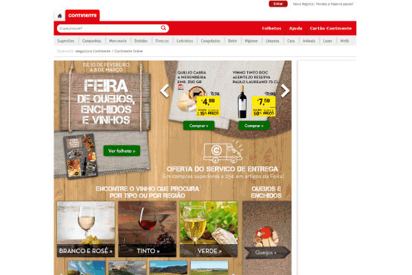
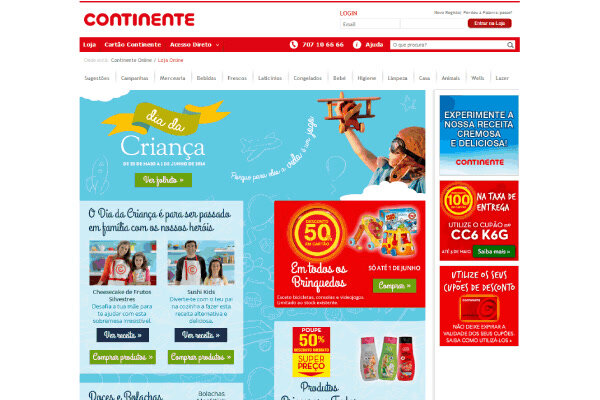

Continente Online: growth, one tested change at a time.
Growing an online supermarket in a country that barely shopped for groceries online. I brought the customer research, the experiments and the design.
Role
Marketing designer and consultant
Team
The marketing and e-commerce teams of Continente Online
Duration
2012–2016
Outcome
13% more sales after the redesign, and checkout completion up from 25% to 30%.
A year of campaign pages: seasonal events, category fairs and partnerships on continente.pt.
01
Context
In 2012 only 0.9% of Portuguese grocery shopping happened online, and the country was coming out of a severe downturn.
Shoppers were price-sensitive and sceptical about buying food they couldn't see or touch. Continente, as the pioneer, had the chance to define online grocery in Portugal.
02
Problem
Continente.pt converted 1.2% of visits, and 75% of carts were abandoned at checkout.
Only 15% of new customers bought again, sign-ups were falling despite more marketing spend, and satisfaction was flat.
03
My role and what I owned
I was the designer inside a marketing team, where research and testing were part of the job.
Customer research, turned into findings the teams could act on.
A/B tests and analysis with the marketing and e-commerce teams.
More than 200 campaigns across 50+ categories: artwork and landing pages.
The redesign of the site, as a partner to the e-commerce team.
04
Key decisions and trade-offs
Decision 1Move promotions into the customer's path
Seasonal banners had 12% click-through. Eye-tracking showed why: 83% of users looked at search and navigation instead.
Chosen
Promotions placed in the search and navigation zones.
Rejected
Bigger, louder banners. The data said people weren't looking there.
Result
+47% click-through, and €1M in monthly sales from promotions.
Decision 2A shorter checkout that shows substitutions
A/B tests pointed at long forms and unclear product substitutions as the reasons carts were abandoned.
Chosen
A 5-step checkout with autofill and a visual preview of substitutions.
Result
Completion from 25% to 30%, and 22% fewer substitution tickets.
Decision 3Bring first-time buyers back with staples
Cohort analysis showed that customers who bought pantry staples came back three times as often. Returning customers also struggled to find what they had bought before.
Chosen
"Pantry Starter" suggestions after the first order, and Buy Again with quick add.
Result
+28% 90-day retention and +19% lifetime value; +24% repeat purchases.
Decision 4Shorter sign-up, with the value up front
Interviews showed registration was too long and its value unclear.
Chosen
Social login, and the discount shown before the form.
Result
200,000 new registrations, to 700,000.

Cheese and wine fair.

Children's Day.
05
Outcome
13%
more sales after the redesign.
25% → 30%
checkout completion.
+0.9
points in customer satisfaction (CSAT).
Figures as recorded at the time; percentages are relative changes unless stated.
06
What I took from it
Watch behaviour before you redesign.
Eye-tracking showed people ignored banners and used search. The fix was moving offers into their path, not making banners louder. I still start product decisions the same way: evidence first, then the change, then the number that says whether it worked.
Let's talk about your product.
I'm based in Porto and work remotely, hybrid or on site.